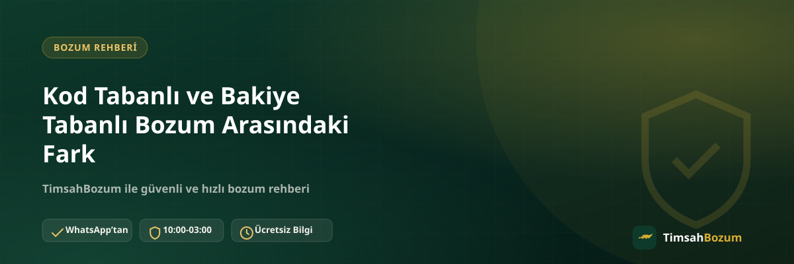

Bozum hizmetleri tek bir kalıba göre çalışmıyor; bazı hizmetlerde tek kullanımlık bir kod bozdurulurken bazılarında hesapta biriken bir bakiye devreye giriyor. Bu ayrım, hem paylaşman gereken bilgiyi hem de kısmi bozum yapıp yapamayacağını doğrudan etkiliyor. Bu yazıda kod tabanlı ve bakiye tabanlı bozum arasındaki farkı, hangi hizmetin hangi kategoriye girdiğini ve bu ayrımın işlemine nasıl yansıdığını anlatıyoruz.
Kod Tabanlı ve Bakiye Tabanlı Bozum Nedir?
Kod tabanlı bozum, tek kullanımlık bir kod veya PIN üzerinden çalışan hizmetleri kapsar. Bakiye tabanlı bozum ise bir hesapta biriken, zamanla artıp azalabilen bir tutar üzerinden ilerler. İki yapı da sonuçta aynı amaca hizmet eder: elindeki değeri nakde çevirmek. Ama işleyiş biçimleri, paylaşman gereken bilgi ve bozdurabileceğin tutar açısından birbirinden ayrılır.
Kod Tabanlı Bozum Nasıl Çalışır?
Razer Gold ve iTunes bu kategorinin en bilinen örnekleri. Bu hizmetlerde elinde tek kullanımlık bir kod veya PIN bulunur; kodun arkasındaki değer sabittir ve kod bir kez kullanıldığında tekrar kullanılamaz. Bozum işleminde kodun tamamı tek seferde değerlendirilir, kodu ikiye bölüp bir kısmını bozdurmak mümkün değildir.
Bakiye Tabanlı Bozum Nasıl Çalışır?
Pokus, Paycell ve mobil ödeme (Vodafone, Türk Telekom, Turkcell) hizmetlerinde durum farklı. Bu hizmetlerde bir kod değil, hesabında zaman içinde birikmiş bir bakiye söz konusu. Bakiye, harcama yapıldıkça azalır, yeni ödeme geldikçe artabilir. Bozum işleminde bu bakiyenin tamamını ya da yalnızca bir kısmını nakde çevirebilirsin.
Kısmi Bozum Hangi Hizmette Mümkün?
Kısmi bozum, yalnızca bakiye tabanlı hizmetlerde geçerli bir seçenek. Örneğin Paycell bakiyende belirli bir tutar varsa, bunun tamamını değil bir bölümünü bozdurup kalanını hesabında bırakabilirsin. Kod tabanlı hizmetlerde (Razer Gold, iTunes) bu seçenek yok; kod paylaşıldığında kodun tam değeri işleme alınır, çünkü kod bir kez kullanıldıktan sonra geçersiz hale gelir ve geri kalanı ayrıca kullanılamaz.
Hangi Hizmetler Hangi Kategoriye Giriyor?
Kod tabanlı hizmetler: Razer Gold, iTunes. Bakiye tabanlı hizmetler: Pokus, Paycell, Vodafone mobil ödeme, Türk Telekom mobil ödeme ve Turkcell mobil ödeme. Turkcell mobil ödeme bozdurma işlemi, müşterinin Paycell hesabı varsa Paycell üzerinden de yürütülebiliyor; bu durumda da işlem yine bakiye tabanlı mantıkla ilerliyor.
Hangi Bilgiyi Paylaşman Gerekiyor?
Paylaşman gereken bilgi, bozduracağın hizmetin türüne göre değişiyor. Kod tabanlı bir hizmet bozduruyorsan tek ihtiyacın kodun kendisi. Bakiye tabanlı bir hizmet bozduruyorsan güncel bakiyeni gösteren okunaklı bir ekran görüntüsü yeterli oluyor. Her iki durumda da işlem WhatsApp üzerinden ilerler; üyelik, form veya kimlik belgesi istenmez.
İşlem Süreci İki Türde Farklı mı İlerliyor?
Genel akış aynı: WhatsApp'tan yazarsın, ilgili bilgiyi paylaşırsın, güncel oranı teyit edersin, onay sonrası ödemen WhatsApp üzerinden görüşülen yöntemle yapılır. Aradaki fark, ilk mesajda paylaşacağın bilginin türünde (kod ya da ekran görüntüsü) ve bozdurulacak tutarın kapsamında (tam kod değeri ya da seçtiğin bakiye miktarı) ortaya çıkıyor.
Neden Kod Tabanlı Hizmette Kısmi Bozum Yok?
Bunun nedeni teknik: bir kod, arkasındaki tüm değeri tek seferlik kullanım için taşır. Kod bir kere işleme alındığında geçersiz hale gelir, dolayısıyla "yarısını kullan, yarısını sakla" gibi bir seçenek yapısal olarak mümkün değil. Bakiye tabanlı hizmetlerde ise bakiye, harcama mantığıyla işlediği için istediğin miktarda düşürülebilir.
Oranlar Hizmete Göre Neden Farklı?
Kod tabanlı ve bakiye tabanlı hizmetlerin oranları da birbirinden farklı. Güncel referans oranlar: Razer Gold %70, Pokus %60, Paycell %60, iTunes %55, Vodafone mobil ödeme %50, Türk Telekom mobil ödeme %50, Turkcell mobil ödeme %30 (Paycell hesabı üzerinden yapılan işlemde %60). Oranlar piyasa koşullarına göre değişebildiği için işlem öncesi güncel oranı WhatsApp'tan teyit etmek en doğrusu.
Kısmi Bozumda Oran Nasıl Uygulanır?
Bakiye tabanlı bir hizmette bakiyenin sadece bir kısmını bozduruyorsan, oran bozdurduğun kısım üzerinden hesaplanır; kalan bakiyenle ilgili herhangi bir taahhüt oluşmaz, istersen kalan tutarı daha sonra ayrı bir işlemle bozdurabilirsin. Kod tabanlı hizmette ise oran her zaman kodun tam değeri üzerinden hesaplanır, çünkü işleme alınan tutar kodun kendisiyle sınırlıdır.
Kod ve Bakiyeyi Karıştırırsan Ne Olur?
Sık karşılaşılan bir yanlış anlama, kod tabanlı bir hizmete "bakiyemin yarısını bozdurayım" beklentisiyle yazmak. Böyle bir talep geldiğinde işlem reddedilmez, ama önce kod tabanlı hizmetin nasıl çalıştığı açıklanır ve gerçek beklenti netleştirilir. Bu da sürecin bir tur uzamasına yol açar. Hangi hizmetin kod, hangisinin bakiye tabanlı olduğunu önceden bilmek, ilk mesajdan itibaren doğru bilgiyi paylaşmanı ve işlemi tek turda ilerletmeni sağlar.
Hangi Durumda Hangi Hizmeti Seçmelisin?
Bu aslında bir seçim değil, elinde ne olduğuna bağlı bir durum. Elinde kullanılmamış bir Razer Gold veya iTunes kodu varsa kod tabanlı süreç işler. Hesabında Pokus, Paycell veya mobil ödeme bakiyesi varsa bakiye tabanlı süreç geçerli olur. İkisi arasında seçim yapman gerekmiyor, elindeki değerin türü hangi sürecin işleyeceğini zaten belirliyor.
İlgili Yazılar
- Bozum İşlemi Yaparken Nelere Dikkat Etmeli
- Google Play, Razer Gold, iTunes Kodu Farkı
- Bozum İşlemi Nedir, Nasıl Çalışır? (Yeni Başlayanlar İçin)
Elindeki kod ya da bakiyenin hangi süreçle bozdurulacağından emin değilsen WhatsApp hattımıza yazarak öğrenebilirsin.